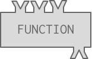

2.4. Function Calls¶
The Python interpreter can compute new values with function calls. You are familiar with the idea of functions from high school algebra. There you might define a function f by specifying how it transforms an input into an output, f(x) = 3x + 2. Then, you might write f(5) and expect to get the value 17.
Python adopts a similar syntax for invoking functions. If there is a named function foo that takes a single input, we can invoke foo on the value 5 by writing foo(5).
There are many built-in functions available in Python. You’ll be seeing some in this chapter and the next couple of chapters.
Functions are like factories that take in some material, do some operation, and then send out the resulting object.
In this case, we refer to the materials as arguments or inputs and the resulting object is referred to as output or return value. This process of taking input, doing something, and then sending back the output is demonstrated in the gif below.

Note
The output of a function is a Python value and we can never really see the internal representation of a value. But we can draw pictures to help us imagine what values are, or we can print them to see an external representation in the console.
You have already used a function: print. The print function causes things to appear in the console.
It is also possible for programmers to define new functions in their programs. You will learn how to do that later in the course. For now, you just need to learn how to invoke, or call, a function, and understand that the execution of the function returns a computed value.
We’ve defined two functions above. The code is hidden so as not to bother you (yet) with how functions are defined.
square takes a single input parameter, and returns that input multiplied by itself. sub takes two input
parameters and returns the result of subtracting the second from the first. Obviously, these functions are not
particularly useful, since we have the operators * and - available. But they illustrate how functions work.
The visual below illustrates how the square function works.

Notice that when a function takes more than one input parameter, the inputs are separated by a comma. Also notice that the order of the inputs matters. The value before the comma is treated as the first input, the value after it as the second input.
Again, remember that when Python performs computations, the results are only shown in the console if there’s a
print statement that says to do that. In the activecode window above, square(5) produces the value 25 but we never
get to see that in the console, because it is not printed.
2.4.1. Function calls as part of complex expressions¶
Anywhere in an expression that you can write a literal like a number, you can also write a function call that produces a number.
For example:
Let’s take a look at how that last execution unfolds. Press the Next Step button below a few times to watch how these two lines of code get evaluated.
2.4.2. Parentheses invoke functions¶
Just typing the name of the function refers to the function as an object, as in the first line in the example below. Typing the name of the function followed by
parentheses () invokes (calls) the function. Of course, you have to put any input values that the function needs inside the parentheses.
In the second line of the example above, the square function is called with the input 3. The square function evaluates the input and retunrs the value 9. The value 9 is then passed as the input to the print function. The print function displays 9 on the console.